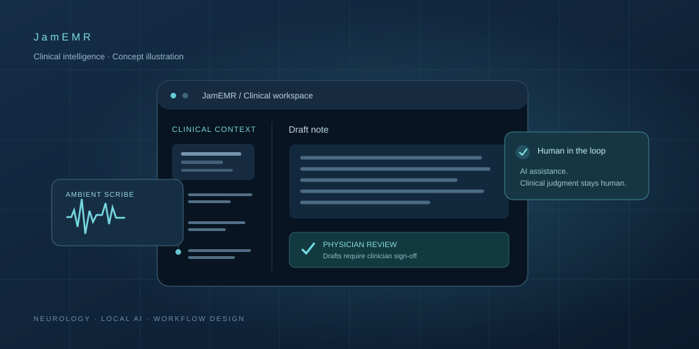

Executive Brain
One goal. Agents working together.
AI SYSTEMS BUILDER · CO-FOUNDER, JAMEMR
AI that remembers.
And gets things done.
Connecting knowledge, memory, and agents. Turning complex ideas into systems that work.
THE INTELLIGENCE LAYER
One goal. Agents working together.
Pick up where intelligence left off.
Knowledge behind the answer.
From “what if” to “what’s next.”
01 / SELECTED WORK

JamEMR is an AI-powered electronic medical record system for neurology, with an ambient scribe that drafts visit notes for physician review.
My role I co-create the product with a neurologist, defining requirements and clinical workflows and supporting AI-assisted development and testing.
Synthetic-data testing complete · Preparing a neurology practice pilot
Visit JamEMRPatterns into predictions.
Train. Tune. Test. Repeat.
02 / BACKGROUND
I bring experience in healthcare and business analysis to the AI systems I build. I care about making complex workflows clearer for the people who use them.
03 / COMMUNITY
Part of Miami’s community of AI builders, founders, and innovators.
04 / ASK MY ASSISTANT
Ask about JamEMR, my healthcare and business experience, or my education. Answers are based on my published background and project information.
Ask about JamEMR, my healthcare experience, or my background.
Open my AI assistantThis is an AI assistant and it may be wrong. Google’s Gemini processes your messages through its paid API. Please avoid sharing sensitive information. If the service is unavailable or its usage limit is reached, send me a message.
05 / CONTACT
Have a question about my work, a healthcare AI idea, or an opportunity to collaborate? Send me a message.
Investment, incubator and accelerator introductions. Healthcare AI ideas. Opportunities to collaborate.
Send me a messageContinue to my contact form.